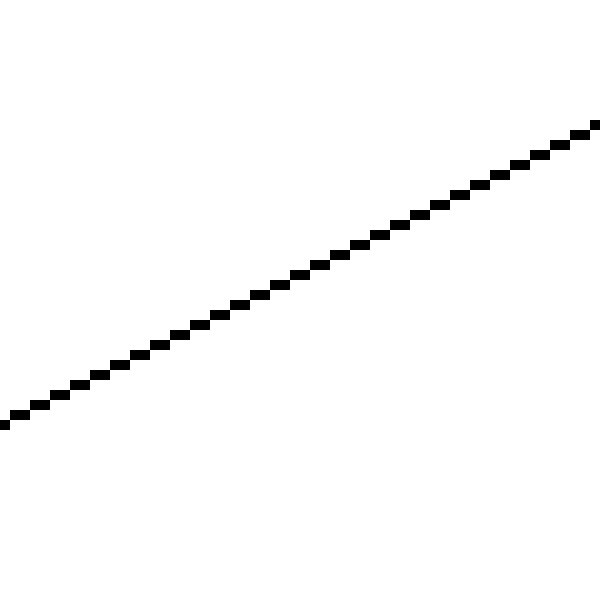
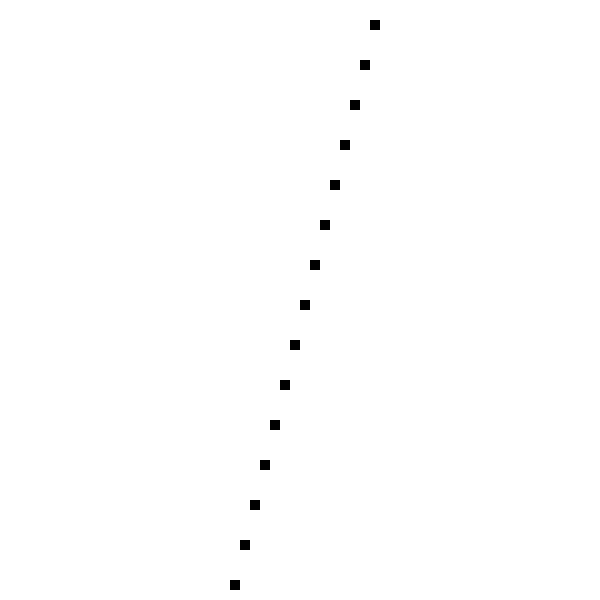

Lines
In Part I of this book, we studied raytracing extensively and developed a raytracer that could render our test scene with accurate lighting, material properties, shadows, and reflection using relatively simple algorithms and math. This simplicity comes at a cost: performance. While non-real-time performance is fine for certain applications, such as architectural visualization or visual effects for movies, it’s not enough for other applications, such as video games.
In this part of the book, we’ll explore an entirely different set of algorithms that favor performance over mathematical purity.
Our raytracer starts from the camera and explores the scene through the viewport. For every pixel of the canvas, we answer the question, “Which object of the scene is visible here?” Now we’ll follow an approach that is, in some sense, the opposite: for every object in the scene, we’ll try to answer the question “In which parts of the canvas will this object be visible?”
It turns out we can develop algorithms that answer this new question much faster than raytracing could, as long as we’re willing to make some accuracy trade-offs. Later, we’ll explore how to use these fast algorithms to achieve results with a quality comparable to that of a raytracer.
We’ll start from scratch again: we have a canvas of dimensions \(C_w\) and \(C_h\), and we can set the color of individual pixels with PutPixel(), but nothing else. Let’s explore how to draw the simplest possible element on the canvas: a line between two points.
Describing Lines
Suppose we have two canvas points, \(P_0\) and \(P_1\), with coordinates \((x_0, y_0)\) and \((x_1, y_1)\) respectively. How can we draw the straight line segment between \(P_0\) and \(P_1\)?
Let’s start by representing a line with parametric coordinates, just as we did with rays before (in fact, you can think of “rays” as lines in 3D). Any point \(P\) on the line can be obtained by starting at \(P_0\) and moving some distance along the direction from \(P_0\) to \(P_1\):
\[P = P_0 + t(P_1 - P_0)\]
We can decompose this equation into two, one for each coordinate:
\[x = x_0 + t\cdot(x_1 - x_0)\]
\[y = y_0 + t\cdot(y_1 - y_0)\]
Let’s take the first equation and solve for \(t\):
\[x = x_0 + t\cdot(x_1 - x_0)\]
\[x - x_0 = t\cdot(x_1 - x_0)\]
\[{{x - x_0} \over {x_1 - x_0}} = t\]
We can now plug this expression for \(t\) into the second equation:
\[y = y_0 + t\cdot(y_1 - y_0)\]
\[y = y_0 + {{x - x_0} \over {x_1 - x_0}} \cdot (y_1 - y_0)\]
Rearranging it a bit:
\[y = y_0 + (x - x_0) \cdot {{y_1 - y_0} \over {x_1 - x_0}}\]
Notice that \({{y_1 - y_0} \over {x_1 - x_0}}\) is a constant that depends only on the endpoints of the segment; let’s call it \(a\). So we can rewrite the equation above as
\[y = y_0 + a\cdot(x - x_0)\]
What is \(a\)? According to the way we’ve defined it, it measures the change in the \(y\) coordinate per unit change in the \(x\) coordinate; in other words, it’s a measure of the slope of the line.
Let’s go back to the equation. Distributing the multiplication:
\[y = y_0 + ax - ax_0\]
Grouping the constants:
\[y = ax + (y_0 - ax_0)\]
Again, \((y_0 - ax_0)\) depends only on the endpoints of the segment; let’s call it \(b\). Finally we get
\[y = ax + b\]
This is the standard formulation of a linear function, which can be used to represent almost any line. When we solved for \(t\), we added a division by \(x_1 - x_0\) without thinking what happens if \(x_1 = x_0\). We can’t divide by zero, which means this formulation can’t represent lines with \(x_1 = x_0\)—that is, vertical lines.
To work around this issue, we’ll just ignore vertical lines for now and figure out how to deal with them later.
Drawing Lines
We now have a way to get the value of \(y\) for each value of \(x\) we’re interested in. This gives us a pair \((x, y)\) that satisfies the equation of the line.
We can now write a first approximation of a function that draws a line segment from \(P_0\) to \(P_1\). Let x0 and y0 be the \(x\) and \(y\) coordinates of \(P_0\), respectively, and x1 and y1 those of \(P_1\). Assuming \(x_0 < x_1\), we can go from \(x_0\) to \(x_1\), computing the value of \(y\) for each value of \(x\), and drawing a pixel at these coordinates:
DrawLine(P0, P1, color) {
a = (y1 - y0) / (x1 - x0)
b = y0 - a * x0
for x = x0 to x1 {
y = a * x + b
canvas.PutPixel(x, y, color)
}
}
Note that the division operator / is expected to perform real division, not integer division. This is despite \(x\) and \(y\) being integers in this context, as they represent coordinates of pixels on the canvas.
Also note that we consider for loops to include the last value of the range. In C, C++, Java, and JavaScript, among others, this would be written as for (x = x0; x <= x1; ++x). We will be using this convention throughout this book.
This function is a direct, naive implementation of the equation above. It works, but can we make it faster?
We aren’t calculating values of \(y\) for any arbitrary \(x\). On the contrary, we’re calculating them only at integer increments of \(x\) and we’re doing so in order. Right after calculating \(y(x)\), we calculate \(y(x+1)\):
\[y(x) = ax + b\]
\[y(x+1) = a\cdot(x+1) + b\]
We can manipulate that second expression a bit:
\[y(x+1) = ax + a + b\]
\[y(x+1) = (ax + b) + a\]
\[y(x+1) = y(x) + a\]
This shouldn’t be surprising; after all, the slope \(a\) is the measure of how much \(y\) changes when \(x\) increases by 1, which is exactly what we’re doing here.
This means we can compute the next value of \(y\) just by taking the previous value of \(y\) and adding the slope; no per-pixel multiplication is needed, which makes the function faster. At the beginning there’s no “previous value of \(y\),” so we start at \((x_0, y_0)\). Then we keep adding \(1\) to \(x\) and \(a\) to \(y\) until we get to \(x_1\).
Again assuming that \(x_0 < x_1\), we can rewrite the function as follows:
DrawLine(P0, P1, color) {
a = (y1 - y0) / (x1 - x0)
y = y0
for x = x0 to x1 {
canvas.PutPixel(x, y, color)
y = y + a
}
}
So far we’ve been assuming that \(x_0 < x_1\). There’s an easy workaround to support lines where that doesn’t hold: since the order in which we draw the pixels doesn’t matter, if we get a right-to-left line, we can just swap P0 and P1 to transform it into the left-to-right version of the same line, and draw it as before:
DrawLine(P0, P1, color) {
// Make sure x0 < x1
if x0 > x1 {
swap(P0, P1)
}
a = (y1 - y0) / (x1 - x0)
y = y0
for x = x0 to x1 {
canvas.PutPixel(x, y, color)
y = y + a
}
}
Let’s use our function to draw a couple of lines. Figure 6-1 shows the line segment \((-200, -100)-(240, 120)\), and Figure 6-2 shows a close-up of the line.

The line appears jagged because we can only draw pixels on integer coordinates, and mathematical lines actually have zero width; what we’re drawing is a quantized approximation of the ideal line from \((-200, -100)-(240, 120)\). There are ways to draw prettier approximations of lines (you may want to look into MSAA, FXAA, SSAA, and TAA as possible entry points to an interesting set of rabbit holes). We won’t go there for two reasons: (1) it’s slower, and (2) our goal is not to draw pretty lines but to develop some basic algorithms to render 3D scenes.
Let’s try another line, \((-50, -200)-(60, 240)\). Figure 6-3 shows the result and Figure 6-4 shows the corresponding close-up.

Oops. What happened?
The algorithm did exactly what we told it to; it went from left to right, computed one value of \(y\) for each value of \(x\), and painted the corresponding pixel. The problem is that it computed one value of \(y\) for each value of \(x\), while in this case we actually need several values of \(y\) for some values of \(x\).
This happens because we chose a formulation where \(y = f(x)\); in fact, it’s the same reason why we can’t draw vertical lines—an extreme case where all the values of \(y\) correspond to the same value of \(x\).
Drawing Lines with Any Slope
Choosing \(y = f(x)\) was an arbitrary choice; we could equally have chosen to express the line as \(x = f(y)\). Reworking all the equations by exchanging \(x\) and \(y\), we get the following algorithm:
DrawLine(P0, P1, color) {
// Make sure y0 < y1
if y0 > y1 {
swap(P0, P1)
}
a = (x1 - x0)/(y1 - y0)
x = x0
for y = y0 to y1 {
canvas.PutPixel(x, y, color)
x = x + a
}
}
This is identical to the previous DrawLine, except the \(x\) and \(y\) computations have been exchanged. This one can handle vertical lines and will draw \((0, 0) - (50, 100)\) correctly; but of course, it can’t handle horizontal lines at all, or draw \((0, 0) - (100, 50)\) correctly! What to do?
We can just keep both versions of the function and choose which one to use depending on the line we’re trying to draw. And the criterion is quite simple; does the line have more different values of \(x\) than different values of \(y\)? If there are more values of \(x\) than \(y\), we use the first version; otherwise, we use the second.
Listing 6-1 shows a version of DrawLine that handles all the cases.
DrawLine(P0, P1, color) {
dx = x1 - x0
dy = y1 - y0
if abs(dx) > abs(dy) {
// Line is horizontal-ish
// Make sure x0 < x1
if x0 > x1 {
swap(P0, P1)
}
a = dy/dx
y = y0
for x = x0 to x1 {
canvas.PutPixel(x, y, color)
y = y + a
}
} else {
// Line is vertical-ish
// Make sure y0 < y1
if y0 > y1 {
swap(P0, P1)
}
a = dx/dy
x = x0
for y = y0 to y1 {
canvas.PutPixel(x, y, color)
x = x + a
}
}
}DrawLine that handles all the casesThis certainly works, but it isn’t pretty. There’s a lot of code duplication, and the logic for selecting which function to use, the logic to compute the function values, and the pixel drawing itself are all intertwined. Surely we can do better!
The Linear Interpolation Function
We have two linear functions \(y = f(x)\) and \(x = f(y)\). To abstract away the fact that we’re dealing with pixels, let’s write it in a more generic way as \(d = f(i)\), where \(i\) is the independent variable, the one we choose the values for, and \(d\) is the dependent variable, the one whose value depends on the other and which we want to compute. In the horizontal-ish case, \(x\) is the independent variable and \(y\) is the dependent variable; in the vertical-ish case, it’s the other way around.
Of course, any function can be written as \(d = f(i)\). We know two more things that completely define our function: the fact that it’s linear, and two of its values—that is, \(d_0 = f(i_0)\) and \(d_1 = f(i_1)\). We can write a simple function that takes these values and returns a list of all the intermediate values of \(d\), assuming as before that \(i_0 < i_1\):
Interpolate (i0, d0, i1, d1) {
values = []
a = (d1 - d0) / (i1 - i0)
d = d0
for i = i0 to i1 {
values.append(d)
d = d + a
}
return values
}
This function has the same “shape” as the first two versions of DrawLine, but the variables are called i and d instead of x and y, and instead of drawing pixels, this one stores the values in a list.
Note that the value of \(d\) corresponding to \(i_0\) is returned in values[0], the value for \(i_0 + 1\) in values[1], and so on; in general, the value for \(i_n\) is returned in values[i_n - i_0], assuming \(i_n\) is in the range \([i_0, i_1]\).
There’s a corner case we need to consider: we may want to compute \(d = f(i)\) for a single value of \(i\)—that is, when \(i_0 = i_1\). In this case we can’t even compute \(a\), so we’ll treat it as a special case:
Interpolate (i0, d0, i1, d1) {
if i0 == i1 {
return [ d0 ]
}
values = []
a = (d1 - d0) / (i1 - i0)
d = d0
for i = i0 to i1 {
values.append(d)
d = d + a
}
return values
}
As an implementation detail, and for the remainder of this book, the values of the independent variable \(i\) are always integers, as they represent pixels, while the values of the dependent variable \(d\) are always floating point values, as they represent values of a generic linear function.
Now we can write DrawLine using Interpolate.
DrawLine(P0, P1, color) {
if abs(x1 - x0) > abs(y1 - y0) {
// Line is horizontal-ish
// Make sure x0 < x1
if x0 > x1 {
swap(P0, P1)
}
ys = Interpolate(x0, y0, x1, y1)
for x = x0 to x1 {
canvas.PutPixel(x, ys[x - x0], color)
}
} else {
// Line is vertical-ish
// Make sure y0 < y1
if y0 > y1 {
swap(P0, P1)
}
xs = Interpolate(y0, x0, y1, x1)
for y = y0 to y1 {
canvas.PutPixel(xs[y - y0], y, color)
}
}
}DrawLine that uses InterpolateThis DrawLine can handle all cases correctly (Figure 6-5).
While this version isn’t much shorter than the previous one, it cleanly separates the computation of the intermediate values of \(y\) and \(x\) from the decision of which is the independent variable and from the pixel-drawing code itself.
It might come as a surprise that this line algorithm is not the best or the fastest there is; that distinction probably belongs to Bresenham’s Algorithm. The reason to present this algorithm is twofold. First, it is easier to understand, which is an overriding principle in this book. Second, it gave us the Interpolate function, which we will use extensively in the rest of this book.
Summary
In this chapter, we’ve taken the first steps to building a rasterizer. Using the only tool we have, PutPixel, we’ve developed an algorithm that can draw straight line segments on the canvas.
We have also developed the Interpolate helper method, a way to efficiently compute values of a linear function. Make sure you understand it well before proceeding, because we’ll be using it a lot.
In the next chapter, we’ll use Interpolate to draw more complex and interesting shapes on the canvas: triangles.